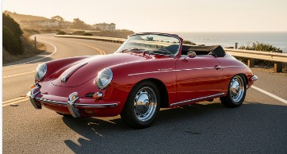
Porsche 356
Coupes, cabriolets & Speedsters — 16 documented Porsche restorations
Fabrication and installation of convertible tops and complete interiors for vintage, domestic, and foreign automobiles — from our shop in Gardiner, New York.
Every aspect of your interior — automotive, marine, and beyond
Seats, carpets, door panels, headliners, and dashboards — fabricated to OEM specs or custom-tailored to you
Supplied, cut, sewn, bound, and installed — including frame repair, hydraulics, and rear windows
Complete marine upholstery for cockpits, cabins, and covers, built for the water
Custom commercial and residential upholstery — from museum lobbies to one-of-a-kind art pieces
A few of the marques that have passed through the shop

Coupes, cabriolets & Speedsters — 16 documented Porsche restorations
Series I–III: seats, dashes, carpets & convertible tops
Convertible top fabrication & installation, 280SL to SL500
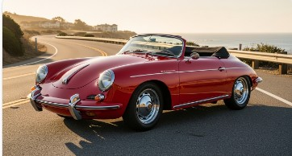
Targa roofs, seats & carpets, from long-hood to 930
22 documented Jaguar restorations, XK era onward
225 documented restorations across 30 marques — model years 1930 to 2004. If your car isn't listed, ask: we fabricate from photos, drawings, or damaged originals.
Nothing matches — but the list is only what's documented. Call the shop about your car.
From vintage models to the most current versions on the market — concours-quality interior components to OEM specs, or custom-tailored to your personal satisfaction
We are capable of fabricating seat upholstery, convertible tops, carpet sets, and tonneau covers — in short, any upholstered goods you need — from photos, drawings, or damaged originals. Prototypes, design, and one-of-a-kind pieces are welcome. A wide range of leather, vinyl, carpet, and top material is at our disposal.
We supply, cut, sew, bind, and install convertible top material and rear window assemblies, with pads, padding bags, and headliners as specified.
Complete marine upholstery alongside our automotive work — cockpit seating, cabin interiors, and covers built to take the weather.
The majority of vehicles in our catalog we have already patterned and are ready to fabricate in your choice of materials:
There is a host of additional work we do beyond what you find here. Give us a call to discuss any further work you would like done.
Call (845) 255-0820Exclusive custom-made commercial and residential upholstery — from antique to modern, we recreate existing furniture and fabricate to your designs
Seven couches for Virgin Atlantic's newest lounge revamp, fabricated with Situ Studios
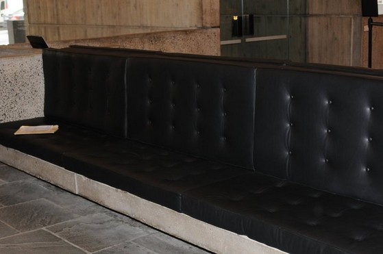
Bringing the Whitney lobby back to its original Marcel Breuer–style upholstery in sumptuous leather
Terminal seating fabricated for Situ Studios at JFK
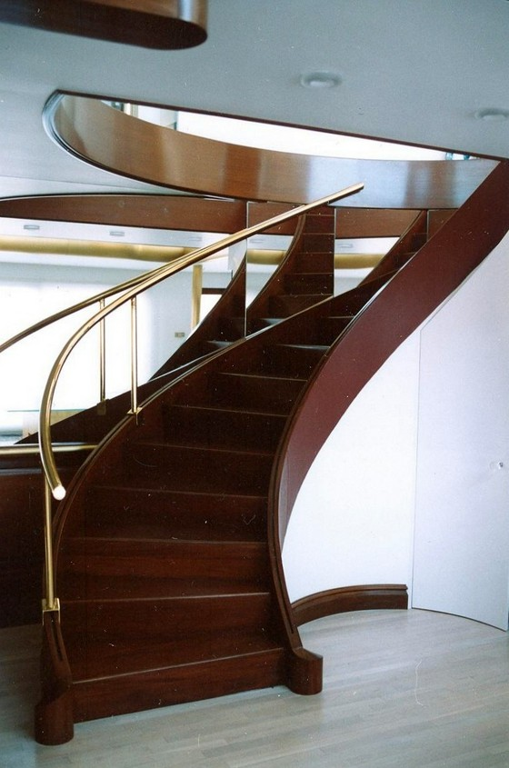
A leather-sided staircase on River Road, Piermont, NY
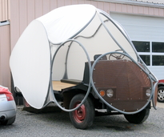
A one-of-one creation whose reflective covering projects images and movies — this is a one-only design
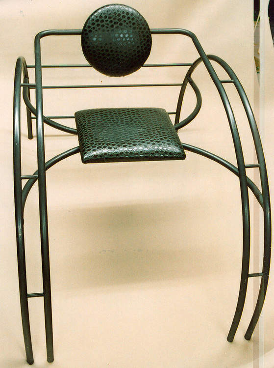
Custom artistic upholstery
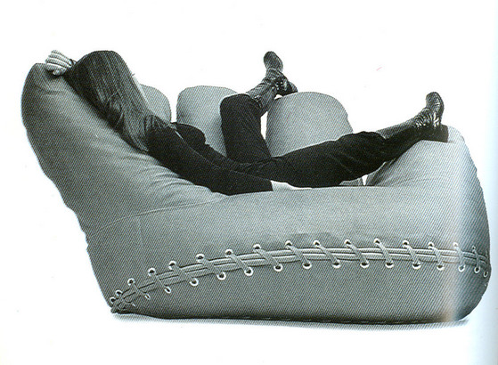
Replicated upholstery of the iconic glove chair
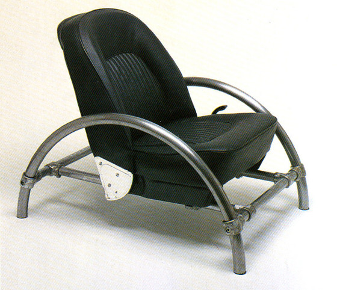
Replicated upholstery
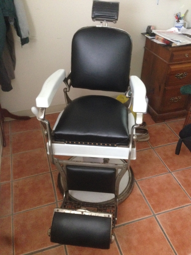
Antique chair restoration
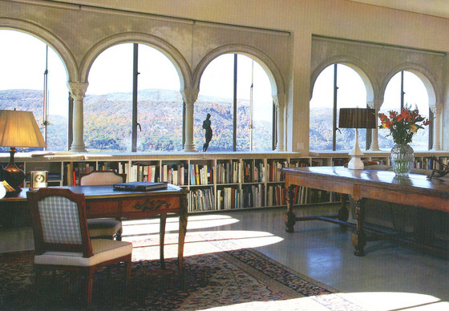
Custom upholstered seat cushions
Replicated upholstery of Marcel Breuer's classic
Booth upholstery for the landmark New York restaurant — plus "Butterfly, Model No. 198" and more replications
Decades of one-off patterns, preserved and reproduced — digital downloads, physical patterns, and complete pre-cut kits
Search the archive by make, model, and year to locate the exact patterns you need
Select digital downloads, physical patterns, or complete pre-cut kits
Get instant digital access or have physical patterns shipped to your door
Use our precision patterns with expert support to restore your classic interior
Every published pattern is test-printed at full size and shop-validated before it goes on sale
Patterns coming to the archive
Patterns coming to the archive
Patterns coming to the archive
Patterns coming to the archive
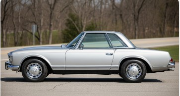
Patterns coming to the archive
Patterns coming to the archive
No vehicles match your search yet — more patterns are added to the archive regularly.
From digital files to complete pre-cut kits, we offer solutions for every project
Perfect for DIY installers with digital capabilities
Traditional patterns shipped to your door
Pre-cut materials ready to install
Hudson Valley Auto Interiors is an upholstery business that services every aspect of your auto interior needs. With over 35 years of experience, we are experts in the field of auto upholstery, and our services are the finest in the tri-state area.
We are accustomed to dealing with a wide range of automobiles and boats, and we are able to offer an almost unlimited range of leathers, vinyls, fabrics, carpets, and convertible top materials. We fabricate and install concours-quality interior components to OEM specs, or custom-tailor to your personal satisfaction.
Our work has been published and highly acclaimed — from the Mercedes-Benz Club of America and Rodder Magazine's 1934 Ford to the Brasserie in the Seagram Building — and our custom furniture work has reached the Whitney Museum, Kennedy Airport, and Virgin Atlantic's Clubhouse at LAX.
Call the shop to discuss your upholstery needs, and we will provide you with efficient service and competitive prices.
Decades of expertise in automotive, marine, and furniture upholstery
Interior components fabricated to OEM specs or tailored to your satisfaction
Prototypes, designs, and one-of-a-kind pieces — from photos, drawings, or damaged originals
Family-run in Gardiner, New York — serving the Hudson Valley and the tri-state area